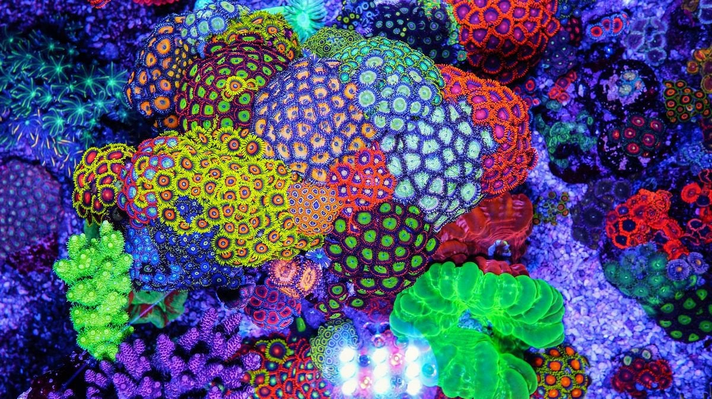
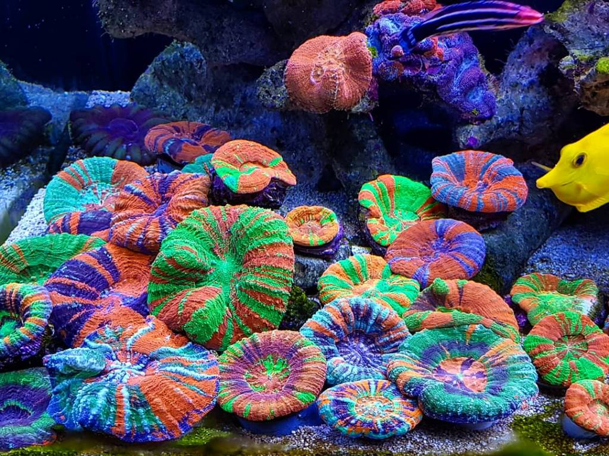

Welcome to Reef Hub! A local-community based networking platform for your modern saltwater aquarist. The goal of this project is to provide a one-stop, central space for reef keepers to buy, sell and trade corals, reef keeping equipment and other marine livestock. We strive for this to be a space where enthusiasts can gather to share thoughts, experiences, and absorb wisdom from the fellow hobbyists within the regional areas that surround us. Or even the world!
There's something for everyone here at Reef Hub! Whether you're a seasoned marine biologist, an aquacuture expert, a retailer, or even just a new hobbyist trying to find guidance. Looking for help, tips, and a mentor, even good deals on used equipment has never been easier! In addition to listing those precious coral frags and other livestock you have lovingly propagated and grown to perfection, you can use Reef Hub to try and track down any elusive or rare species your heart may be looking for.
Reef Hub offers a variety of digital tools and solutions to accommodate many common problems reef keepers face. Ranging from water volume, pounds per square inch, and addative dosage calculators - to a digital log book, so you can graph and display the stability of your aquariums water parameters and calculate your consumption rates. Allowing you to keep the information privately to yourself for your own reference, link it discreetly, or display it publically on your profile for the world to see!
Sign up, join our newsletter, outfit your profile and get involved with the community!
We look forward to your contribution.